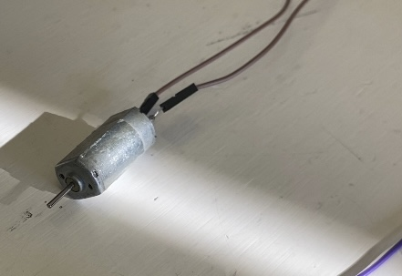
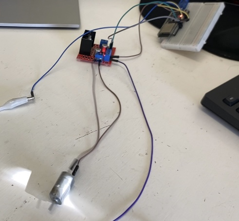

Tercer Proyecto
Nombre del proyecto:Control de motor DC
Autores
- Barrientos Miguel Leonardo
- Zermeño Cervantes Rodrigo
Asignatura: Introducción a la Mecatronica
Fecha: 19 de Septiembre del 2025
Descripción
En este tercer proyecto de la materia Introducción a la Mecatrónica, nuestro objetivo fue realizar la conexión y programación de un motor DC para lograr su encendido, apagado y control de velocidad utilizando un Arduino/ESP32.
Usamos los pines digitales y la función ledcWrite() para variar la velocidad del motor mediante la técnica de modulación por ancho de pulso (PWM).
Objetivos
General
Aprender a controlar un motor DC utilizando un microcontrolador, comprendiendo el funcionamiento de los pines de salida y el control de velocidad por PWM.
Especificos
- Programar el encendido y cambio de giro del motor.
- Implementar el control de velocidad mediante la función
ledcWrite(). - Comprender la relación entre frecuencia, ciclo de trabajo y velocidad del motor.
Alcance y Exclusiones
-Incluye:
- Conexión del motor DC a través del driver y pines de salida del Arduino/ESP32.
- Código para encendido, apagado y cambio de giro.
- Código con control progresivo de velocidad.
-No Incluye:
Procedimiento
Primero identificamos los pines de salida del microcontrolador y realizamos las conexiones correspondientes del motor.
Una vez conectado, programamos un código sencillo que permitiera encender el motor en una dirección, detenerlo y hacerlo girar en sentido contrario con intervalos de tres segundos entre cada encendido.
Este fue nuestro primer código funcional:
Código 1
#define in1 32
#define in2 33
void setup() {
pinMode(in1, OUTPUT);
pinMode(in2, OUTPUT);
}
void loop() {
digitalWrite(in1,1);
digitalWrite(in2,0);
delay(3000);
digitalWrite(in1,0);
digitalWrite(in2,0);
delay(3000);
digitalWrite(in1,0);
digitalWrite(in2,1);
delay(3000);
}
Como segunda parte de este proyecto, en base a lo anteriormente realizado teniamos que programar el motor de manera que pudiesemos controlar su velocidad y que este aumentara y disminuyera gradualmente su velocidad en lugar de detenerse o empezar a avanzar repentinamente. Esto debido a que traducido a un motor real, si llegase a suceder, podria ocurrir una perdida de control o incluso un degaste innecesario en el mecanismo.
A continuación el segundo codigo que ocupamos para esta segunda parte del proyecto:
Código 2
pinMode(in1, OUTPUT);
pinMode(in2, OUTPUT);
//Control de velocidad
ledcAttachChannel(pwm,1000,8,0); //pin,frecuencia,bits,canal //config
}
void loop() {
for(vel=0; vel<=256;vel++){
ledcWrite(pwm,vel);
digitalWrite(in1,1);
digitalWrite(in2,0);
delay(10);
}
for(vel=256;vel>=0;vel--){
digitalWrite(in1,1);
digitalWrite(in2,0);
delay(10);
}
}
Lo siguiente son imagenes del motor utilizado asi como de este conectado a un puente H que conectaba con el Arduino/ESP32 para poder recibir la programación de los códigos previamente vistos

Foto del motor utilizado en cuestión para este proyecto

Foto del motor utilizado conectado al puente H interconectado con el Arduino/ESP32